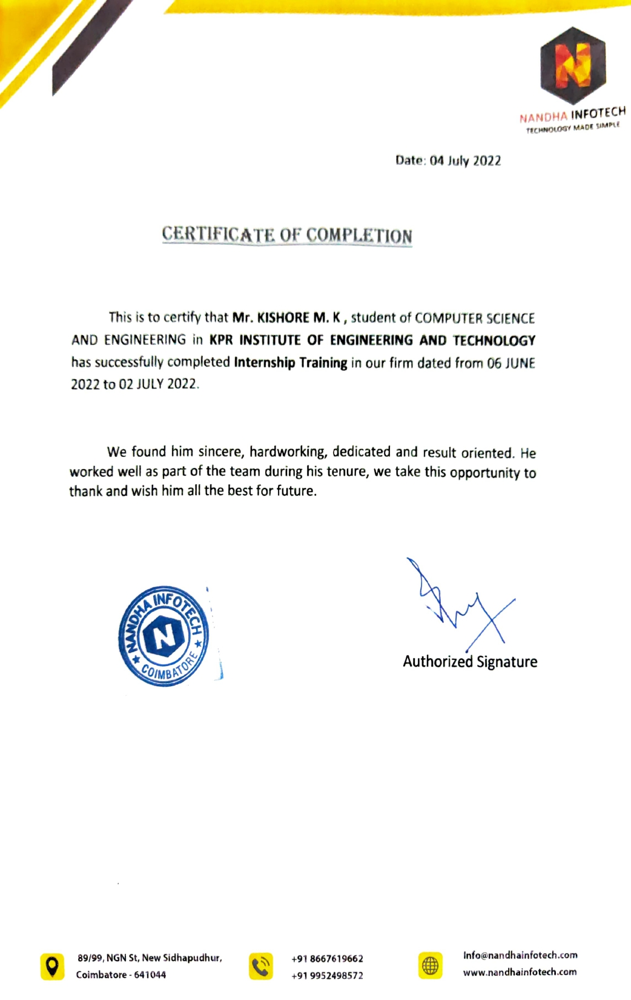

I have been both an amazing learning opportunity and a great deal of fun during my three months of internship. The position has taught me a lot of extra knowledge which I couldn't learn in the school and It has kept me on my toes for five months straight. I found it was very interesting and challenging when the tasks were assigned to me. It was a great opportunity for me to NANDHA INFOTECH t was a great opportunity for me to join as a front-end developer for my internship program which allowed me to gain real-world experience
I had a variety of tasks which involved almost every aspect of the development.As I in charge of few divisions, my work load is always so much especially end of every month. I had really develop new skills and worked on various of tasks which are totally new for me. Sometimes I found it's so complicated yet I continue learning without giving up. Management skills were so important because sometimes it's impossible to complete everything on a day-to-day basis. In order to let things done efficiently, I had to become good at delegating and managing my tasks with other employees. My colleagues had also taught me something new and I also do not hesitate when I encountered any problems. I could always explored challenging tasks, join in some discussions, discuss with my colleagues when I had encounter some problems. I feel comfortable and nice when I dealing with my colleagues and manager. My manager would always asked me about my current conditions and what problems that I had encounter. It makes me felt like so lucky to have such a wonderful team with me during my internship. A big advantage was the fact that the company paid for my internship and during those three months I was able to focus on my professional development and enjoy everything it had to offer, without worrying about the basic needs.
And Finally I was awarded with a certificate of my internship at NANDHA INFOTECH
